视频 / Video
视频来源 / Video sources
Brown acceptance speech after winning
unknown · unknown · 635s · 12/12 frames with faces
Brown kick-off event in Toledo
unknown · unknown · 805s · 12/12 frames with faces
Husted full concession speech
unknown · unknown · 283s · 12/12 frames with faces
Husted launches Senate campaign
unknown · unknown · 156s · 13/18 frames with faces
关键帧与人脸识别 / Keyframes and face identity
OH_brown_victory
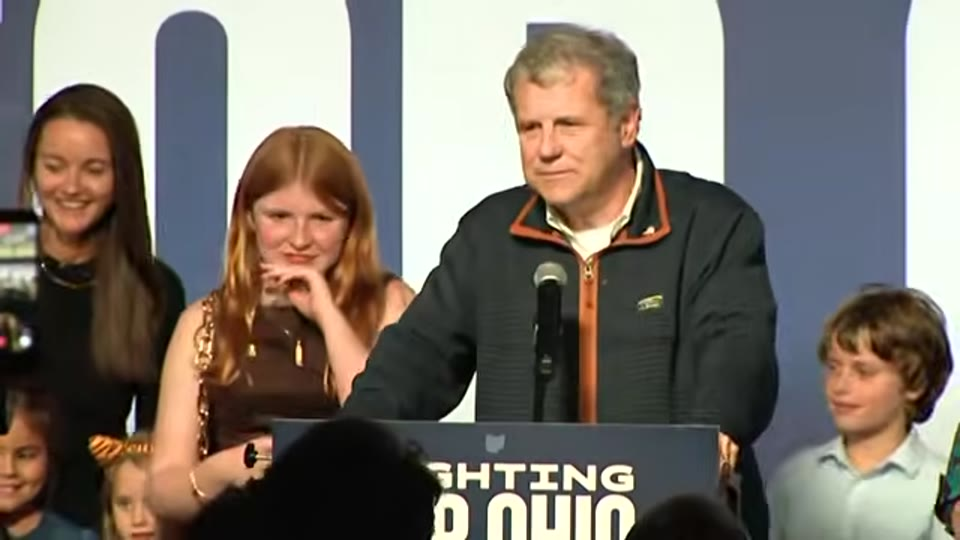
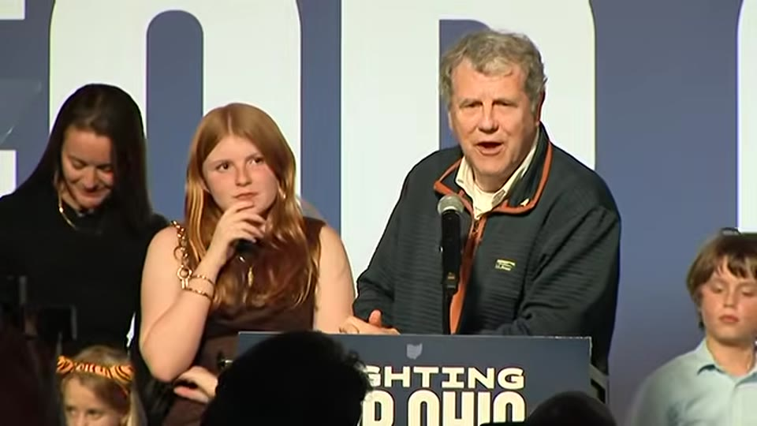
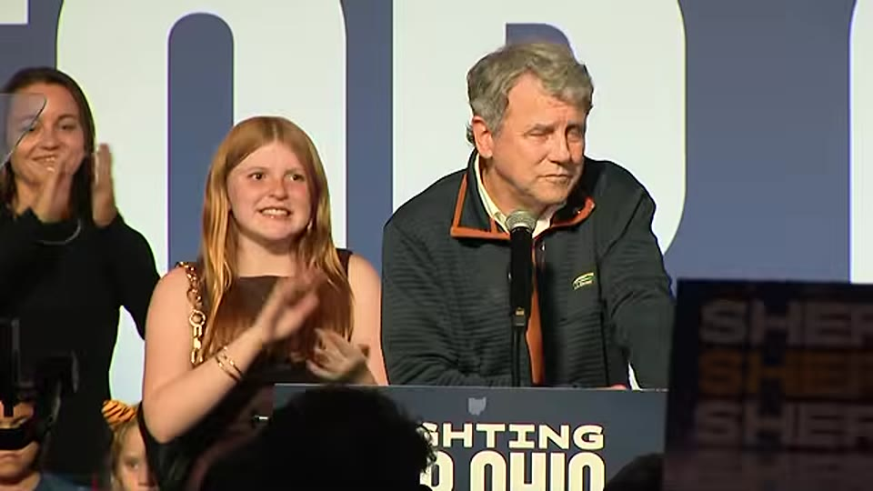
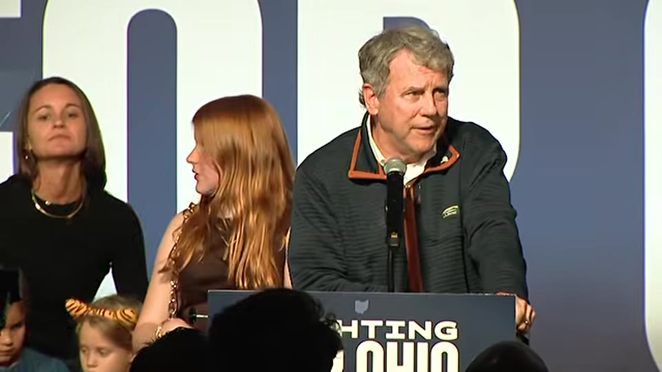
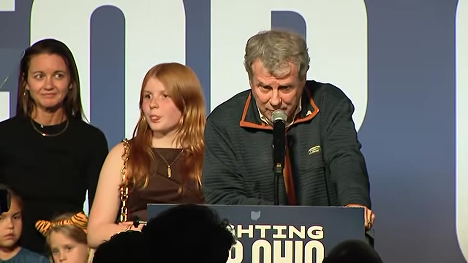
OH_brown_toledo
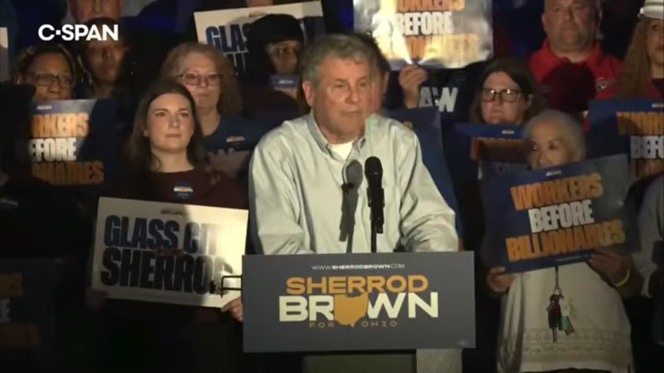
OH_husted_concession
OH_husted_launch
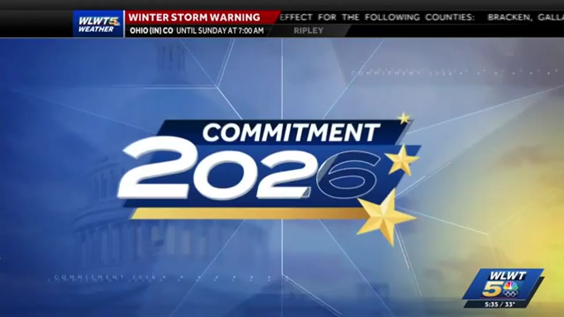
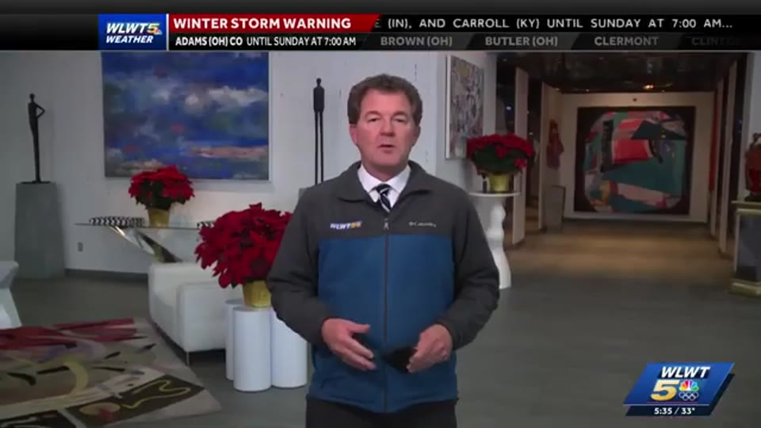
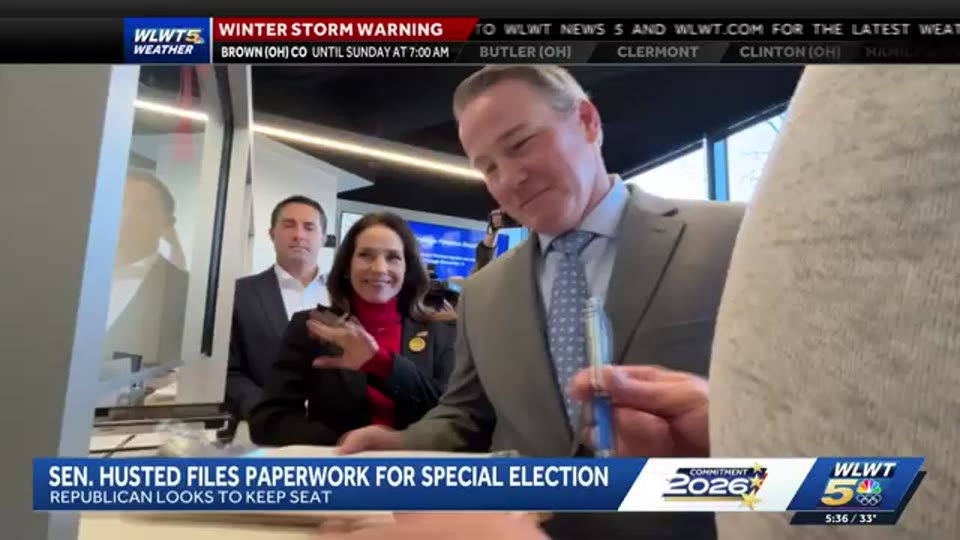
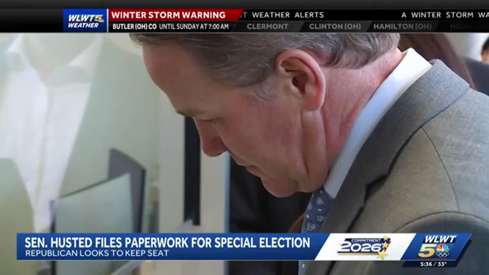
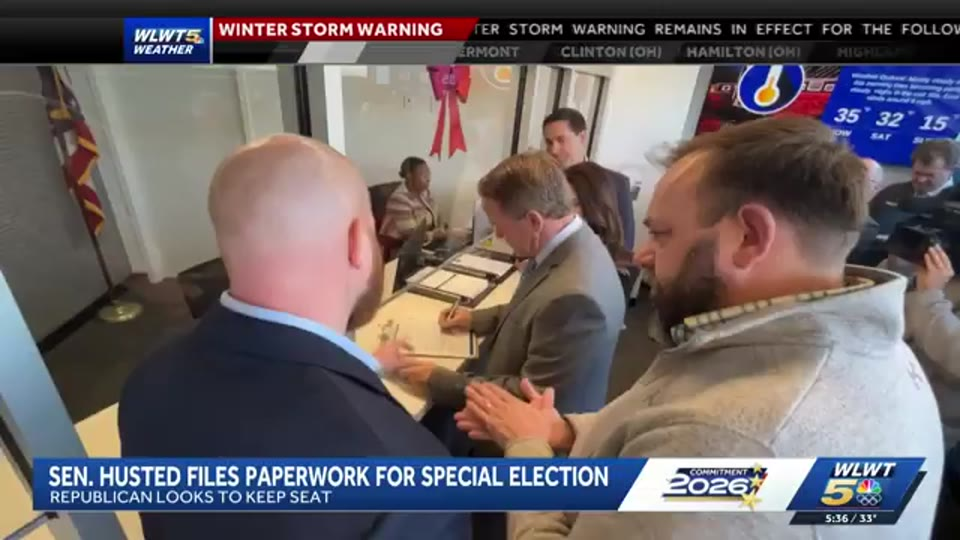
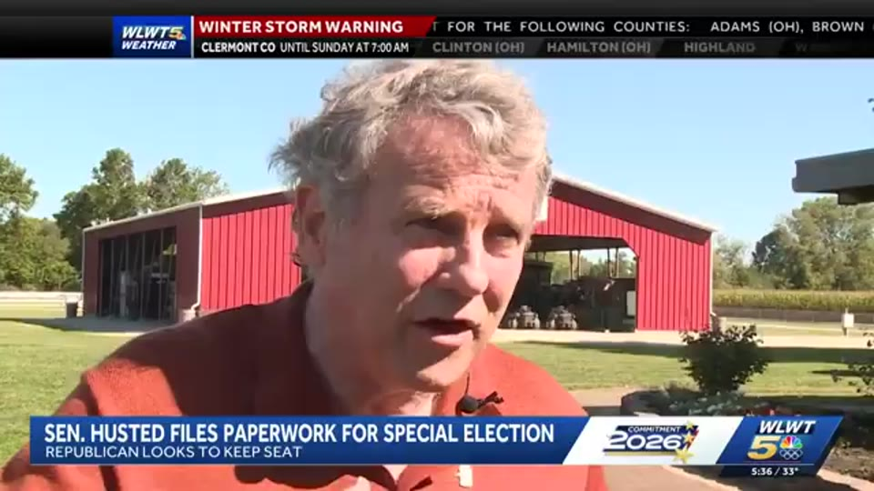